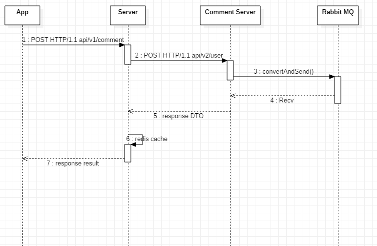
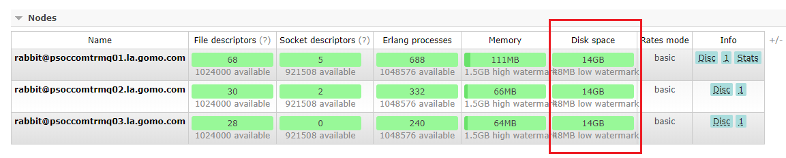

问题背景
说起来都是一把辛酸泪。深夜被老大一个电话call起来，说客户端调的一个接口百分之百报500错误。服务器上清一色的超时报错：2019-04-02 23:47:55.342 [http-nio-8088-exec-74] ERROR c.g.s.c.ExceptionTranslatorAutoConfiguration - Unexpected exception occurs while visiting the URI /api/v1/comments
at org.springframework.web.client.RestTemplate.doExecute(RestTemplate.java:674)
at org.springframework.web.client.RestTemplate.execute(RestTemplate.java:621)
at org.springframework.web.client.RestTemplate.postForObject(RestTemplate.java:388)
at com.gomo.music.service.comment.CommentService.createTextComment(CommentService.java:322)
at com.gomo.music.service.comment.CommentService$$FastClassBySpringCGLIB$$45f5fdde.invoke(<generated>)
at org.springframework.cglib.proxy.MethodProxy.invoke(MethodProxy.java:204)
at org.springframework.aop.framework.CglibAopProxy$DynamicAdvisedInterceptor.intercept(CglibAopProxy.java:669)
at com.gomo.music.service.comment.CommentService$$EnhancerBySpringCGLIB$$493dae5b.createTextComment(<generated>)
at com.gomo.music.web.external.comment.CommentController.handleCreate(CommentController.java:354)
at com.gomo.music.web.external.comment.CommentController.create(CommentController.java:185)
at com.gomo.music.web.external.comment.CommentController$$FastClassBySpringCGLIB$$4d4e3183.invoke(<generated>)
at org.springframework.cglib.proxy.MethodProxy.invoke(MethodProxy.java:204)
at org.springframework.aop.framework.CglibAopProxy$CglibMethodInvocation.invokeJoinpoint(CglibAopProxy.java:738)
at org.springframework.aop.framework.ReflectiveMethodInvocation.proceed(ReflectiveMethodInvocation.java:157)
at com.ryantenney.metrics.spring.TimedMethodInterceptor.invoke(TimedMethodInterceptor.java:48)
at com.ryantenney.metrics.spring.TimedMethodInterceptor.invoke(TimedMethodInterceptor.java:34)
at com.ryantenney.metrics.spring.AbstractMetricMethodInterceptor.invoke(AbstractMetricMethodInterceptor.java:59)
at org.springframework.aop.framework.ReflectiveMethodInvocation.proceed(ReflectiveMethodInvocation.java:179)
at org.springframework.aop.framework.CglibAopProxy$DynamicAdvisedInterceptor.intercept(CglibAopProxy.java:673)
at com.gomo.music.web.external.comment.CommentController$$EnhancerBySpringCGLIB$$1e7fe0af.create(<generated>)
at sun.reflect.NativeMethodAccessorImpl.invoke0(Native Method)
at sun.reflect.NativeMethodAccessorImpl.invoke(NativeMethodAccessorImpl.java:62)
at sun.reflect.DelegatingMethodAccessorImpl.invoke(DelegatingMethodAccessorImpl.java:43)
at java.lang.reflect.Method.invoke(Method.java:498)
at org.springframework.web.method.support.InvocableHandlerMethod.doInvoke(InvocableHandlerMethod.java:205)
at org.springframework.web.method.support.InvocableHandlerMethod.invokeForRequest(InvocableHandlerMethod.java:133)
at org.springframework.web.servlet.mvc.method.annotation.ServletInvocableHandlerMethod.invokeAndHandle(ServletInvocableHandlerMethod.java:97)
at org.springframework.web.servlet.mvc.method.annotation.RequestMappingHandlerAdapter.invokeHandlerMethod(RequestMappingHandlerAdapter.java:827)
at org.springframework.web.servlet.mvc.method.annotation.RequestMappingHandlerAdapter.handleInternal(RequestMappingHandlerAdapter.java:738)
at org.springframework.web.servlet.mvc.method.AbstractHandlerMethodAdapter.handle(AbstractHandlerMethodAdapter.java:85)
at org.springframework.web.servlet.DispatcherServlet.doDispatch(DispatcherServlet.java:967)
at org.springframework.web.servlet.DispatcherServlet.doService(DispatcherServlet.java:901)
at org.springframework.web.servlet.FrameworkServlet.processRequest(FrameworkServlet.java:970)
at org.springframework.web.servlet.FrameworkServlet.doPost(FrameworkServlet.java:872)
... 65 common frames omitted
Caused by: java.net.SocketTimeoutException: Read timed out
at java.net.SocketInputStream.socketRead0(Native Method)
at java.net.SocketInputStream.socketRead(SocketInputStream.java:116)
at java.net.SocketInputStream.read(SocketInputStream.java:171)
at java.net.SocketInputStream.read(SocketInputStream.java:141)
at org.apache.http.impl.io.SessionInputBufferImpl.streamRead(SessionInputBufferImpl.java:137)
at org.apache.http.impl.io.SessionInputBufferImpl.fillBuffer(SessionInputBufferImpl.java:153)
at org.apache.http.impl.io.SessionInputBufferImpl.readLine(SessionInputBufferImpl.java:282)
at org.apache.http.impl.conn.DefaultHttpResponseParser.parseHead(DefaultHttpResponseParser.java:138)
at org.apache.http.impl.conn.DefaultHttpResponseParser.parseHead(DefaultHttpResponseParser.java:56)
at org.apache.http.impl.io.AbstractMessageParser.parse(AbstractMessageParser.java:259)
at org.apache.http.impl.DefaultBHttpClientConnection.receiveResponseHeader(DefaultBHttpClientConnection.java:163)
at org.apache.http.impl.conn.CPoolProxy.receiveResponseHeader(CPoolProxy.java:165)
at org.apache.http.protocol.HttpRequestExecutor.doReceiveResponse(HttpRequestExecutor.java:273)
at org.apache.http.protocol.HttpRequestExecutor.execute(HttpRequestExecutor.java:125)
at org.apache.http.impl.execchain.MainClientExec.execute(MainClientExec.java:272)
at org.apache.http.impl.execchain.ProtocolExec.execute(ProtocolExec.java:185)
at org.apache.http.impl.execchain.RetryExec.execute(RetryExec.java:89)
at org.apache.http.impl.execchain.RedirectExec.execute(RedirectExec.java:111)
at org.apache.http.impl.client.InternalHttpClient.doExecute(InternalHttpClient.java:185)
at org.apache.http.impl.client.CloseableHttpClient.execute(CloseableHttpClient.java:83)
at org.apache.http.impl.client.CloseableHttpClient.execute(CloseableHttpClient.java:56)
at org.springframework.http.client.HttpComponentsClientHttpRequest.executeInternal(HttpComponentsClientHttpRequest.java:89)
at org.springframework.http.client.AbstractBufferingClientHttpRequest.executeInternal(AbstractBufferingClientHttpRequest.java:48)
at org.springframework.http.client.AbstractClientHttpRequest.execute(AbstractClientHttpRequest.java:53)
at org.springframework.web.client.RestTemplate.doExecute(RestTemplate.java:660)
... 99 common frames omitted
报错接口逻辑时序如下：

由于在目标服务器上的accessLog中没看到有请求记录，按照常规问题处理思路，做了一套常规暂时解决问题的操作（并没有什么用）：
- 将 HttpComponentsClientHttpRequestFactory 的 readTimeout、connetTimeout、requestTimeout配置全都放大10倍 —— 于事无补
后来怀疑了一下是不是nginx转发的问题，ping拿ip，nslookup ip 看机房，发现没什么问题：
:~]$ nslookup xxx.xxx.xxx.net.cn 10.10.33.11
Server: 10.10.33.11
Address: 10.10.33.11#53
Non-authoritative answer:
Name: xxx.xxx.xxx.net.cn
Address: 10.10.33.221
Name: xxx.xxx.xxx.net.cn
Address: 10.10.33.222
Name: xxx.xxx.xxx.net.cn
Address: 10.10.33.223
:~]$ nslookup xxx.xxx.xxx.net.cn 10.10.33.12
Server: 10.10.33.12
Address: 10.10.33.12#53
Non-authoritative answer:
Name: xxx.xxx.xxx.net.cn
Address: 10.10.33.223
Name: xxx.xxx.xxx.net.cn
Address: 10.10.33.222
Name: xxx.xxx.xxx.net.cn
Address: 10.10.33.221
:~]$ curl xxx.xxx.xxx.net.cn
{"app":{"name":"comment-api","version":"1.0.0.RELEASE","description":"Parent pom providing dependency and plugin management for applications built with Maven","encoding":"UTF-8","java":{"source":"1.8.0_162","target":"1.8.0_162"}},"git":{"build":{"host":"PCSJ000110","version":"1.0.0.RELEASE","time":1537254950000,"user":{"name":"huanghe","email":"huanghe@gomo.com"}},"branch":"master","commit":{"message":{"short":"ååredisè¿æè¯è®ºæ°æ®","full":"ååredisè¿æè¯è®ºæ°æ®\n\nChange-Id: I7b0c58c564f6d4c95740013e7d717a006f71ca59"},"id":"76af5ad2dab60d04f5fbb5ac7943f0e02b52d583","id.describe-short":"76af5ad-dirty","id.abbrev":"76af5ad","id.describe":"76af5ad-dirty","time":1537168335000,"user":{"email":"huanghe@gomo.com","name":"huanghe"}},"closest":{"tag":{"name":"","commit":{"count":""}}},"dirty":"true","remote":{"origin":{"url":"ssh://huanghe@gerrit.3g.net.cn:29418/comment-api"}},"tags":""}}
:~]$ cat /etc/resolv.conf
options rotate
options timeout:2
nameserver 10.10.33.11
nameserver 10.10.33.12最后不得已，本地debug了一下，发现请求进到目标服务里之后，进入rabbitTemplate.covertAndSend()之后就再也没出来…
原因
RabbitMQ连接失败

基本可以定位为RabbitMQ出问题了。在RabbitMQ的Dashboard中，可以看到用到的mq节点的disk space都已经飘红，只剩下一百多M。在磁盘空间不足的节点上，有两个队列积了两千多万条消息待消费。每个队列中的Consumers都是”… no consumers …”。到消息淤积队列的消费者模块服务器上检查，看到成片的相似错误日志： 07:01:32.693 [AMQP Connection 10.10.33.167:5672] ERROR c.r.c.impl.ForgivingExceptionHandler - An unexpected connection driver error occured
java.net.SocketException: Connection timed out (Read failed)
at java.net.SocketInputStream.socketRead0(Native Method)
at java.net.SocketInputStream.read(SocketInputStream.java:141)
at java.io.BufferedInputStream.fill(BufferedInputStream.java:246)
at java.io.BufferedInputStream.read(BufferedInputStream.java:265)
at java.io.DataInputStream.readUnsignedByte(DataInputStream.java:288)
at com.rabbitmq.client.impl.Frame.readFrom(Frame.java:91)
at com.rabbitmq.client.impl.SocketFrameHandler.readFrame(SocketFrameHandler.java:164)
at com.rabbitmq.client.impl.AMQConnection$MainLoop.run(AMQConnection.java:571)
at java.lang.Thread.run(Thread.java:748)
07:01:32.702 [AMQP Connection 10.10.33.167:5672] ERROR o.s.a.r.c.CachingConnectionFactory - Channel shutdown: connection error
07:01:32.702 [AMQP Connection 10.10.33.167:5672] ERROR o.s.a.r.c.CachingConnectionFactory - Channel shutdown: connection error
07:01:32.703 [AMQP Connection 10.10.33.167:5672] ERROR o.s.a.r.c.CachingConnectionFactory - Channel shutdown: connection error
07:01:32.705 [AMQP Connection 10.10.33.167:5672] ERROR o.s.a.r.c.CachingConnectionFactory - Channel shutdown: connection error
07:01:32.705 [AMQP Connection 10.10.33.167:5672] ERROR o.s.a.r.c.CachingConnectionFactory - Channel shutdown: connection error
07:02:23.796 [SimpleAsyncTaskExecutor-2] ERROR o.s.a.r.l.SimpleMessageListenerContainer - Failed to check/redeclare auto-delete queue(s).
org.springframework.amqp.AmqpIOException: java.io.IOException
at org.springframework.amqp.rabbit.support.RabbitExceptionTranslator.convertRabbitAccessException(RabbitExceptionTranslator.java:71)
at org.springframework.amqp.rabbit.connection.RabbitAccessor.convertRabbitAccessException(RabbitAccessor.java:113)
at org.springframework.amqp.rabbit.core.RabbitTemplate.doExecute(RabbitTemplate.java:1467)
at org.springframework.amqp.rabbit.core.RabbitTemplate.execute(RabbitTemplate.java:1417)
at org.springframework.amqp.rabbit.core.RabbitTemplate.execute(RabbitTemplate.java:1393)
at org.springframework.amqp.rabbit.core.RabbitAdmin.initialize(RabbitAdmin.java:504)
at org.springframework.amqp.rabbit.core.RabbitAdmin$11.onCreate(RabbitAdmin.java:419)
at org.springframework.amqp.rabbit.connection.CompositeConnectionListener.onCreate(CompositeConnectionListener.java:33)
at org.springframework.amqp.rabbit.connection.CachingConnectionFactory.createConnection(CachingConnectionFactory.java:579)
at org.springframework.amqp.rabbit.connection.CachingConnectionFactory.createBareChannel(CachingConnectionFactory.java:526)
at org.springframework.amqp.rabbit.connection.CachingConnectionFactory.getCachedChannelProxy(CachingConnectionFactory.java:500)
at org.springframework.amqp.rabbit.connection.CachingConnectionFactory.getChannel(CachingConnectionFactory.java:482)
at org.springframework.amqp.rabbit.connection.CachingConnectionFactory.access$1400(CachingConnectionFactory.java:97)
at org.springframework.amqp.rabbit.connection.CachingConnectionFactory$ChannelCachingConnectionProxy.createChannel(CachingConnectionFactory.java:1159)
at org.springframework.amqp.rabbit.core.RabbitTemplate.doExecute(RabbitTemplate.java:1441)
at org.springframework.amqp.rabbit.core.RabbitTemplate.execute(RabbitTemplate.java:1417)
at org.springframework.amqp.rabbit.core.RabbitTemplate.execute(RabbitTemplate.java:1393)
at org.springframework.amqp.rabbit.core.RabbitAdmin.getQueueProperties(RabbitAdmin.java:336)
at org.springframework.amqp.rabbit.listener.SimpleMessageListenerContainer.redeclareElementsIfNecessary(SimpleMessageListenerContainer.java:1209)
at org.springframework.amqp.rabbit.listener.SimpleMessageListenerContainer$AsyncMessageProcessingConsumer.run(SimpleMessageListenerContainer.java:1470)
at java.lang.Thread.run(Thread.java:748)
Caused by: java.io.IOException: null
at com.rabbitmq.client.impl.AMQChannel.wrap(AMQChannel.java:105)
at com.rabbitmq.client.impl.AMQChannel.wrap(AMQChannel.java:101)
at com.rabbitmq.client.impl.AMQChannel.exnWrappingRpc(AMQChannel.java:123)
at com.rabbitmq.client.impl.ChannelN.queueDeclare(ChannelN.java:948)
at com.rabbitmq.client.impl.ChannelN.queueDeclare(ChannelN.java:50)
at sun.reflect.NativeMethodAccessorImpl.invoke0(Native Method)
at sun.reflect.NativeMethodAccessorImpl.invoke(NativeMethodAccessorImpl.java:62)
at sun.reflect.DelegatingMethodAccessorImpl.invoke(DelegatingMethodAccessorImpl.java:43)
at java.lang.reflect.Method.invoke(Method.java:498)
at org.springframework.amqp.rabbit.connection.CachingConnectionFactory$CachedChannelInvocationHandler.invoke(CachingConnectionFactory.java:980)
at com.sun.proxy.$Proxy210.queueDeclare(Unknown Source)
at org.springframework.amqp.rabbit.core.RabbitAdmin.declareQueues(RabbitAdmin.java:579)
at org.springframework.amqp.rabbit.core.RabbitAdmin.access$200(RabbitAdmin.java:66)
at org.springframework.amqp.rabbit.core.RabbitAdmin$12.doInRabbit(RabbitAdmin.java:508)
at org.springframework.amqp.rabbit.core.RabbitTemplate.doExecute(RabbitTemplate.java:1461)
... 18 common frames omitted
Caused by: com.rabbitmq.client.ShutdownSignalException: channel error; protocol method: #method<channel.close>(reply-code=404, reply-text=NOT_FOUND - home node 'rabbit@psoccomtrmq01.la.gomo.com' of durable queue 'comment_result_send_queue_1061' in vhost '/dev' is down or inaccessible, class-id=50, method-id=10)
at com.rabbitmq.utility.ValueOrException.getValue(ValueOrException.java:66)
at com.rabbitmq.utility.BlockingValueOrException.uninterruptibleGetValue(BlockingValueOrException.java:32)
at com.rabbitmq.client.impl.AMQChannel$BlockingRpcContinuation.getReply(AMQChannel.java:366)
at com.rabbitmq.client.impl.AMQChannel.privateRpc(AMQChannel.java:229)
at com.rabbitmq.client.impl.AMQChannel.exnWrappingRpc(AMQChannel.java:117)
... 30 common frames omitted
Caused by: com.rabbitmq.client.ShutdownSignalException: channel error; protocol method: #method<channel.close>(reply-code=404, reply-text=NOT_FOUND - home node 'rabbit@psoccomtrmq01.la.gomo.com' of durable queue 'comment_result_send_queue_1061' in vhost '/dev' is down or inaccessible, class-id=50, method-id=10)
at com.rabbitmq.client.impl.ChannelN.asyncShutdown(ChannelN.java:505)
at com.rabbitmq.client.impl.ChannelN.processAsync(ChannelN.java:336)
at com.rabbitmq.client.impl.AMQChannel.handleCompleteInboundCommand(AMQChannel.java:143)
at com.rabbitmq.client.impl.AMQChannel.handleFrame(AMQChannel.java:90)
at com.rabbitmq.client.impl.AMQConnection.readFrame(AMQConnection.java:634)
at com.rabbitmq.client.impl.AMQConnection.access$300(AMQConnection.java:47)
at com.rabbitmq.client.impl.AMQConnection$MainLoop.run(AMQConnection.java:572)
... 1 common frames omitted
看起来消费者找不到集群中的MQ节点，而尝试连接节点出现not found的情况将会导致连接关闭。
根据RabbitMQ官方文档Consumers — RabbitMQ，
An attempt to consume from a non-existent queue will result in a channel-level exception with the code of 404 Not Found and render the channel it was attempted on to be closed.
Connection Failures
In the event of a connection failure, the client will need to establish a new connection to the broker. Any channels opened on the previous connection will have been automatically closed and these will need re-opening too.
RabbitMQ节点连接失败原因
可是为什么会无法连接到节点呢？
根据RabbitMQ 官方指南Reliability Guide — RabbitMQ
What Can Fail?
Network problems are probably the most common class of failure. Not only can networks fail, firewalls can interrupt idle connections, and network failures are not always detected immediately.
为什么没有自动恢复连接（Automatic Connection Recovery）
由于项目使用了Spring Boot，因此使用了默认的RabbitMQ客户端配置RabbitAutoConfiguration。该配置中，连接工厂(ConnectionFactory)的初始化使用了如下构造方法：
|
解决方案
自定义ConnectionFactory的bean，factory.setAutomaticRecoveryEnabled(true);